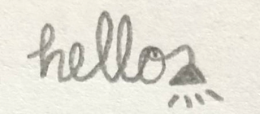
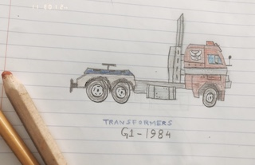

The good thing about being a tester like this is you get to learn bits and pieces of technology (languages, tools) that the developer is working with. In big teams with established test processes, this does not happen all the time. The tester is often boxed in with set testing processes, bug tracking tools, and not much more. The testing on the unit test side of the spectrum is not often visible to the functional tester.
Go back to the homepage.